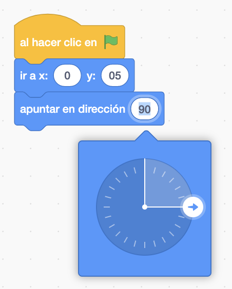
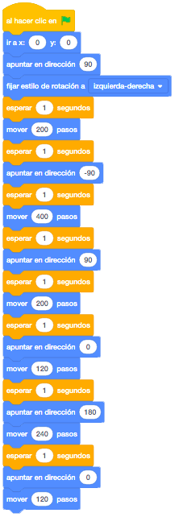
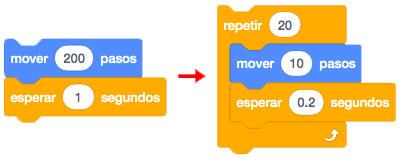
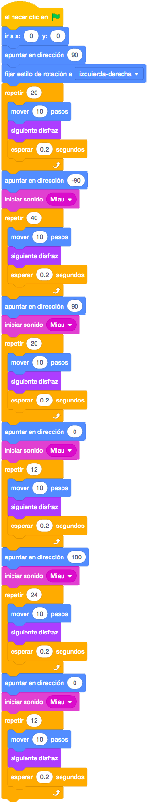

Será nuestro personaje que se movera cambiando de disfraces y cambiando de escenario. Lo podemos descargar de este link
Usaremos el fondo Xy-grid para explicar las coordenadas del escenario. Y luego le dejaremos que elija cualquier otro escenario para hacer su juego.
Primero pondremos al gato en el centro de la pantalla X = 0 e Y = 0, apuntando hacia la derecha.

Moveremos pasos hasta que llegue al borde de la derecha pero sin pasarse.
En los pasos poner siempre valores que terminen en 0 porque luego es más facil cuando más adelante implementemos el bucle "Repetir".
Después apuntaremos a la izquierda.
Cuidado porque el gato se pondrá boca abajo ya que estamos cambiando su orientación. Para evitar esto y que solo se dé la vuelta, tendríamos que cambiar el estilo de rotación a "Izquierda/Derecha".

Haremos que se mueva hacia la izquierda hasta llegar al borde y volveremos apuntar a la derecha y el gato tendrá que moverse hasta el centro X= 0 e Y = 0.
Haremos que apunte hacia arriba y que se mueva sin pasarse del borde y apuntamos hacia abajo y que mueva pasos hasta el otro extremos sin pasarse del borde.
Y por último apuntamos hacia arriba y movemos pasos hasta que llegue de nuevo al centro.
Si lo ejecutamos parece que no hace nada y eso es porque nuestro ojos son más lentos que el ordenador. Para ver lo que realmente esta haciendo
el gato pondremos un bloque de "esperar 1 segundo" antes de cada apuntar.

Nos faltaria que el gato se moviese mediante disfraces y que antes de cambiar de dirección se oiga el sonido "Miau" que tiene asociado al gato.
Utilizaremos un nuevo bloque "Repetir". Esta en Control. Es un bucle que repetira un número de veces los bloques que pongamos en su interior. Le
dejaremos que repita solo 10 veces. Meteremos dentro del repetir los pasos y le quitamos un 0 para que su multiplicación sean los pasos que queremos hacer.
Y el esperar le ponemos menos para que sea mas rápido.

Pondremos el sonido "Miau" antes del "Repetir" y el cambio de disfraz dentro del "Repetir".

{kind=link}